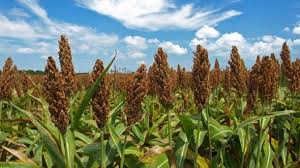

Finger millet, Eleusine coracana L., is also known as African millet, koracan, ragi (India). It is an important staple food in parts of eastern and central Africa and India. It is an important cereal in Karnataka. It is extensively grown in Karnataka, Tamil Nadu, Andhra pradesh, Orissa, Bihar, Gujrat and Maharashtra and in the hilly regions of Uttar Pradesh and himachal Pradesh, with a total area of 2.5 million hectares and 2.2 million tonnes of production.
The height of cultivars varies from 40 cm to I m and the spike length ranges from 3 to 13 cm. The colour of grains may vary from white through orange-red deep brown and purple, to almost black. The grains are smaller than those of pearl millet, and the mean I 000-seed weight is about 2.6 g.
Ragi may be grown as a hot weather crop, from May to September, using long duration varieties and as a cold season crop, from November and December, using early types. Ragi is monocropped in India under irrigation or transplantation. Rainfed it is mostly intercropped with cereals, castor bean, niger, groundnut and pulses. The most common subsidiary crops grown with ragi are fieldbean (Lablab purpureus), pigeon pea (Cajanus cajan), cowpea (Vigna sinensis), and niger (Guizotia abysinnica).
With groundnuts, ragi is the subsidiary crop. Liberal manure, mainly sheep and cattle, is applied. Green manures such as cowpeas, sunnhemp, artificial manures and oil cakes, have been used on both irrigated and unirrigated crops. Ragi is chopped and weeded at intervals of 14 days or so. The number and frequency of irrigations varies with seasonal conditions.
Ragi matures 3-5 months after sowing, depending on variety, season and soil properties. Rainfed crops are cut close to ground, stalks are allowed to wither for a day or two in field, and then bundled and stacked for about 2 months before threshing.
To separate the grains, dried earheads are beaten with sticks, sheaves are trodden by bullocks or crushed by stone rollers. The average yield of the rain-fed crop ranges from 10 to 15 q/ha, whereas the irrigated crop yields up to 40 or 50 q/ha. The fodder yield ranges from 30-90 q/ha in the case of the late groups.
The origin of castor is obscured by its wide dissemination and spread in ancient times. Castor is indigenous to eastern Africa, especially Ethiopia but elsewhere there is considerable evidence indicating its introduction. According to De Candolle (1890), tropical Africa is the original home of castor.
Castor (Ricinus communis), known as erand in Hindi, diveligo in Gujarati and amudam in Telugu plays an important role in countries’ vegetable oil economy. Today, castor oil finds application in the manufacture of a wide range of ever expanding industrial products.
Apart from meeting the internal demands, India exports annually about 150 thousand metric tonnes of castor oil worth around Rs300 crores in foreign exchange. At present, India ranks first in the world in terms of area, production and productivity.
However, according to Vavilov (1949), Ethiopia is the centre of origin of Castor. It can reasonably be assumed from the available literature that castor is infact indigenous to east Africa and most probably originated in Ethiopia.
Globally, castor constitutes less than one per cent of total oilseeds production. In recent times, India has quadrupled the production while China has doubled its castor production. Total area under castor (2003) in the world was about 1.16 M ha with an annual production of around 1.14 M t. The world’s average productivity was around 983 kg ha-1. India ranks first both in area and production with an average productivity of 1146 kg ha-1 as against world average of 983 kg ha-1.
In India, the area under castor gradually decreased from 0.8 M ha in 1990 to 0.7 by 2000 and again gradually increased to 0.73 by 2009-10. In spite of fluctuations in caster area under cultivation, production increased due to increase in productivity from around 800 kg ha-1 in 1990 to 1372 kg ha-1 in 2009-10.
Castor, although basically a warm region crop, grows in temperate and tropical regions throughout the world and it is difficult to define those most suitable for its development. It can be successfully grown from 300 to 1800 m above sea level.
Castor production lies between 40°N and 40°S. It can grow well at sea level and naturally growing at an altitude of 2750 m near equator. In India, it is successfully grown up to 1500 m.
Castor requires moderately high temperature of 20°-26°C with low humility throughout the growing season for maximum yields. Low temperature extends the emergence, rendering the emerging seedlings liable to attack by fungal diseases and insects. High temperature at flowering (around 41°C) for even short period results in blasting of flowers and poor pod set. A frost free growing period between 130 to 190 days, depending on cultivar, is necessary for satisfactory yields, particularly from dwarf hybrids.
Basically, a long day plant, castor is adaptable to, with some loss of yield, to a fairly wide range of day lengths from 12 to 18 hrs.
With a reputation for drought resistance, castor nevertheless, produces highest yields with a minimum rainfall between 600 to 760 mm. For optimum growth and development, approximately 100 mm evenly distributed rainfall in each of the first four months period is desirable. There should be no shortage during flowering period.
The plant varies greatly in its growth habit, colour of foliage and stem, seed size, colour and oil content so that cultivars often bear little resemblance to each other. Some are large perennials often developing into small trees, others behave as short-lived dwarf annuals and every graduation between these extremes can be found.
Main taproot of castor grows several meters long with secondary ones restricted to about 75 cm of soil depth. The tertiary roots are very long up to more than 45 cm. Root hairs are usually absent.
The stem is cylindrical, glabrous, frequently glaucos with a woody hollow center and stem colours varying from bright green, green with reddish bluish, carmine or rose red etc. The stem is marked by a number of nodes, which are close at base and distinct in upper portion.
Leaves may have wide range of foliage colours and size. Leaves are simple and palmate with 7 to 11 lobes. Waxy bluish bloom may present in certains.
Inflorescences are born on the main, lateral and tertiary branches. The main stem is terminated by an inflorescence or raceme, known as primary and is usually the largest on the plant. The inflorescence is also known as candle or spike and consists of fairly close panicles of unisexual flowers in clusters of three or four arising spirally on the raceme axis.
The male flowers (staminates) occur in groups at the base of the inflorescence and the female flowers (pistilates) are born on the upper part. Flowering occurs from the base upwards.
Staminate flowers usually open simultaneously with pistilate and desiccate after pollen discharge. Pollen is shed readily between 26° and 29°C, with relative humidity of 60 per cent. A temperature of 15°C delays shedding.
The plant produce flowers over an extended period. The lowest flowering raceme on the plant is usually to first to mature but the upper and latest racems may be just beginning to flower at the end of growing season of cultivated annual cultivars.
Breakthrough in varietal front was achieved in late 1960s with the development of Aruna, a short duration (120-150 days) mutant. Until the advent of Aruna, long duration varieties (220-280 days) were under cultivation. Subsequently two more short duration varieties Bhagya and Sowbhagya were released. Importance of hybrid vigour was commercially exploited in castor by the release of GCH 3.
In India, castor is essentially a rainfed crop during kharif. Seeding time depends on the onset of monsoon. Early sowing results in high yield. However, early sown crop suffers from severe incidence of semilooper.
The seeds may be treated with Thiram or Bavestin (3 g kg-1) to protect from seed born alternaria blight, seedling blight and wilt.
The most ideal time for seeding kharif castor is immediately after the receipt of monsoon rains. Recommended seeding time for rainfed castor in Andhra Pradesh is second fortnight of June and in Gujarat first fortnight of July. Although, no precise information is available on optimum planting time for rabi and summer castor for different regions, preliminary information suggests September- October and January as ideal periods respectively.
A plant population of 55,000 ha-1 has been found optimum for rainfed castor in the entire castor growing regions of the country. For achieving required plant stand, a seed rate of 6 to 8 kg ha-1 is adequate depending on seed size. For an irrigated crop, optimum plant stand is 18,500 plants ha-1 and the recommended seed rate is 5 to 6 kg ha-1.